Еженедельный выпуск Los-Santos News. Главные события недели: репортаж с шерифом, расследование взлома, ночная встреча у мэрии и тайна моста San Fierro.
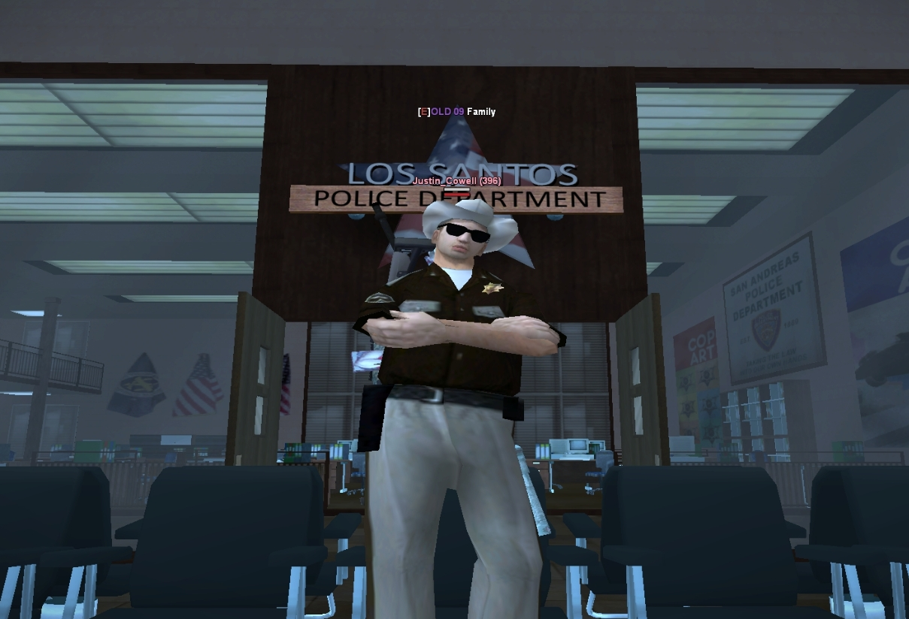
«Кто-то должен стоять между городом и хаосом»
Пять историй. Один город. Тридцать одна фотография.
Корреспондент Los-Santos News провел полные сутки с шерифом Justin Cowell: от утренних сводок до операции в East Los Santos.
Шериф Felix Akana возвращается к делу, которое мучает его три года.
Как министр Alya Fisher в одиночку остановила атаку на частоты штата.
Миллион на кону: редакция LSN против вопросов министра.
Просто ночь, просто люди — репортаж без повода.
Что ждать с 16 по 22 ноября — от температуры до астропрогноза.
24 часа с шерифом Justin Cowell: утро, патруль, операция, вечер и один дом, куда он всегда возвращается.
Утро в участке начинается не с кофе — оно начинается с тишины.
Шериф Justin Cowell приходит за час до смены. Просматривает сводки за ночь, расставляет красные точки на карте. Пока город спит, мы уже знаем, где будет жарко
Его кабинет — крепость из папок, раций и недосыпа. Десять минут с чашкой — единственная пауза за весь день. После тишины начинается город.
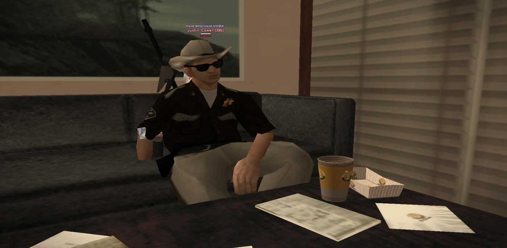
К девяти утра участок оживает. Cowell указывает на три точки: Здесь сегодня будет работа.
Брифинг перед сменой — карта, красные нити, три точки на городе. Патруль начинается с проверки машин. Номер 2504 — его личный выбор на сегодня.
Эта машина — мой офис на колёсах, — усмехается Шериф, проверяя рацию. Первый вызов — проверка на улице. Он не повышает голос — ему это не нужно.
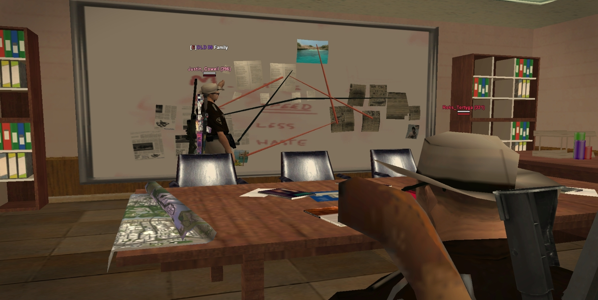
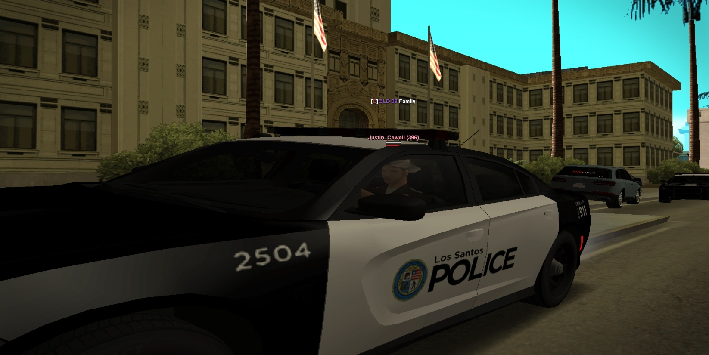
ДТП — отдельная работа, где закон встречает хаос на асфальте.
Два автомобиля, перекресток, разбитое стекло. Cowell выходит первым: конусы, протокол, свидетели. Здравствуйте, вас приветствует Шериф ЛСПД — фраза, которую он произносит десятки раз в неделю и каждый раз как впервые.
Никто не пострадал — это главное. Через двадцать минут дорога снова открыта. У шерифа в телефоне — только что пришедшее сообщение от диспетчера: East Los Santos, камера зафиксировала передачу.
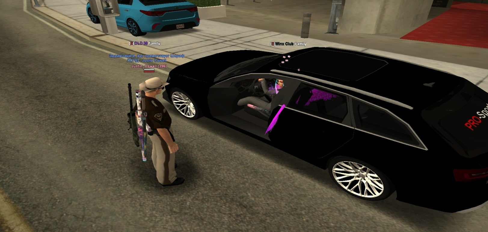
Камеры зафиксировали передачу крупной партии — дальше был только переход от экрана к асфальту.
CAM-07 показала все: троих, маску, оружие, конверт, перешедший из рук в руки. Собираем группу. Выезжаем через десять минут
Через три минуты после задержания шериф держал продавца на мушке. LSPD. Руки на машину — и выстрелов не прозвучало. Так это и работает, если рядом правильный человек.
Мы не просто ловим курьеров. Мы идем к тем, кто стоит за ними
— шериф Justin Cowell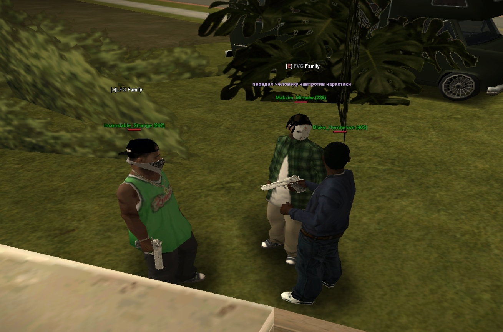
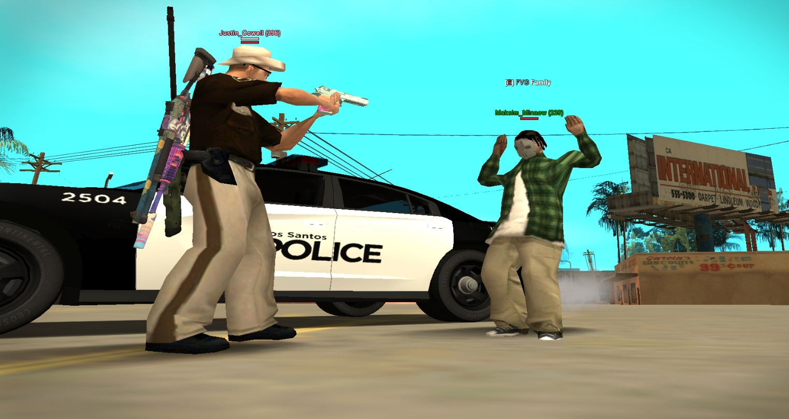
Офицеры расходятся. Шериф остается — не потому, что должен, а потому, что привык.
Он снимает фуражку. Третий день рождения дочери подряд я встретил в машине — говорит он, глядя на стол, где среди сводок лежит фотография жены. Aleksandra Suvorova ждет каждый вечер. Даже когда он не приходит вовремя.
Привыкаешь к адреналину, но не к мысли, что сегодня можешь не вернуться
Он надевает фуражку, поправляет значок. Смена закончилась, но завтра все начнется снова. Кофе, сводки, красные нити на доске. И фотография жены на столе — как якорь, который не дает ему потеряться в этом городе. Этот якорь держит его на плаву, когда шторм внутри становится слишком сильным.
Форма — это не ткань. Это обещание вернуться домой
— шериф Justin Cowell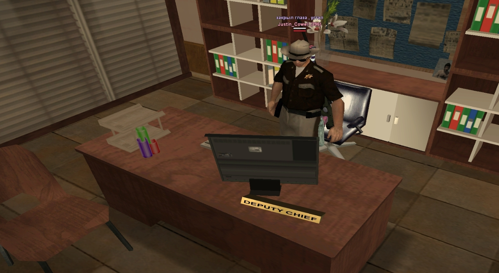
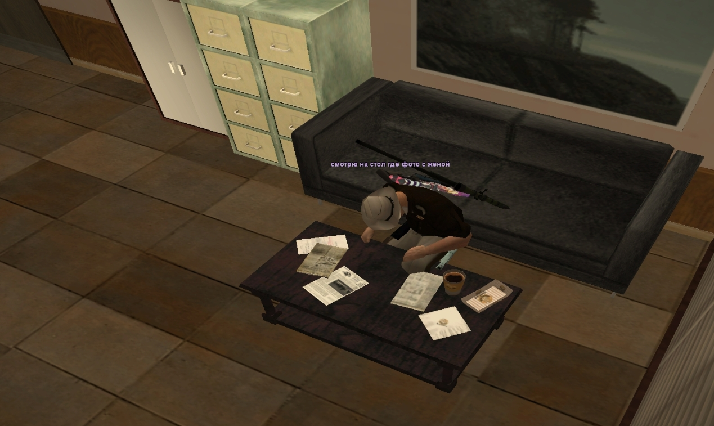
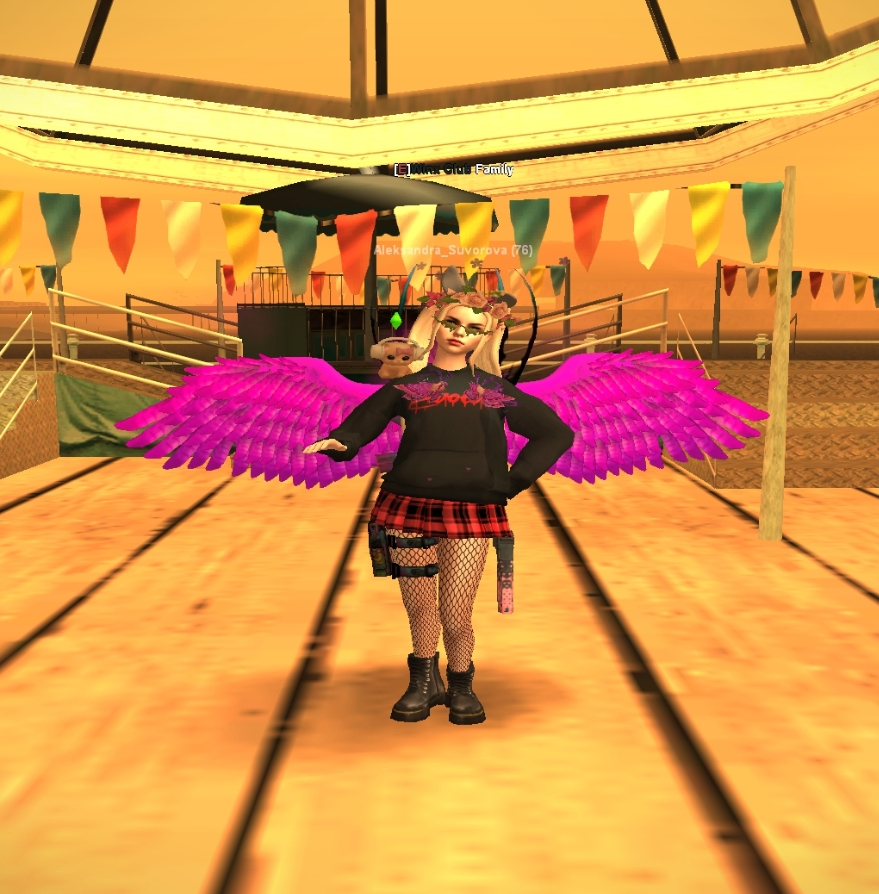
Смена окончена. Город засыпает, зная, что его улицы охраняют те, кто готов пожертвовать своим покоем ради чужой безопасности. Завтра рассвет принесет новые вызовы — и значок снова будет на месте.
— Из заметок корреспондентаРепортаж без повода — такие ночи не попадают в сводки, но именно они и есть город.
Ночь в Los Santos — это не тишина и пустые улицы. Иногда это ступени мэрии и десятки людей, которым не хотелось расходиться.
Белые колонны, арки, дежурное освещение — здание стало просто фоном. Музыка, разговоры, смех растворялись в ночном воздухе. Имена терялись в свете фонарей.
Иногда не нужно ничего особенного. Просто ночь, просто люди рядом
— из ночных заметок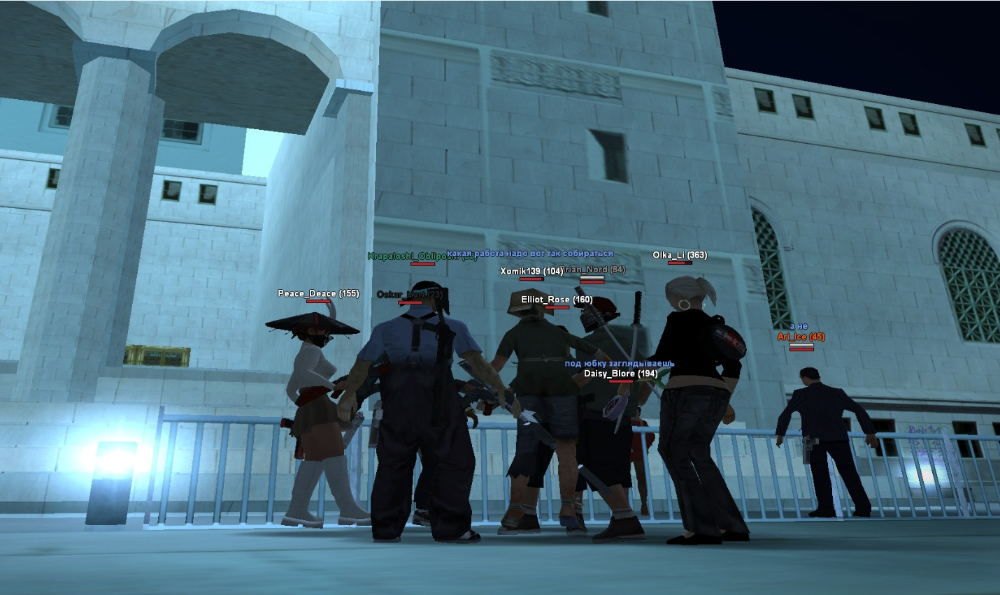
Журналист Los-Santos News оказался рядом с министром Alya Fisher в момент взлома государственных частот.
Обычная беседа о реформах связи. Кофе, картина с мостом, скучные цифры.
Ничто не предвещало проблем: уверения в стабильности, планы на квартал, улыбки в камеру. Министр информационной связи Alya Fisher вела интервью ровно двадцать минут.
Через пятнадцать минут после этих слов все изменилось.
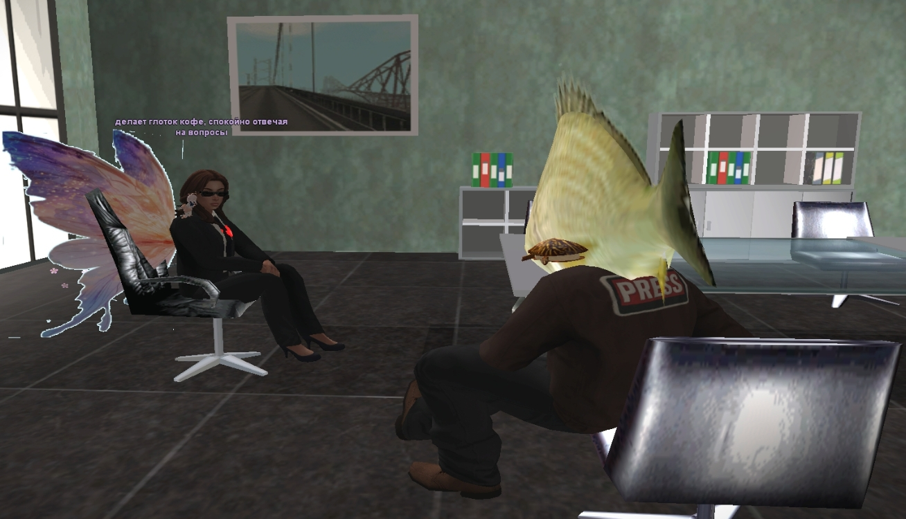
14:15. Неизвестный хакер взломал закрытые частоты экстренных служб штата. В эфир пошли переговоры диспетчеров: координаты перестрелок, число раненых, реальные оценки угрозы.
Город услышал то, что не должен был слышать.
Министр резко встаёт из-за стола. Интервью прервано.
Она переключает каналы рации, пытаясь найти источник. Они взломали резервный канал — говорит она, не отрываясь от эфира. Параллельно звонит тем, кто умеет отслеживать сигнал.
Мне нужно найти его. Прямо сейчас. Каждая минута на счету
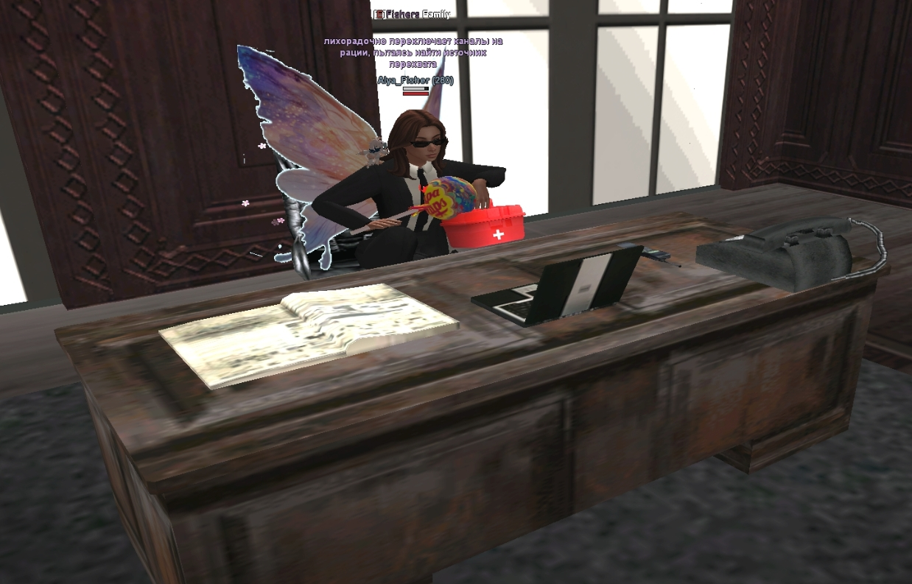
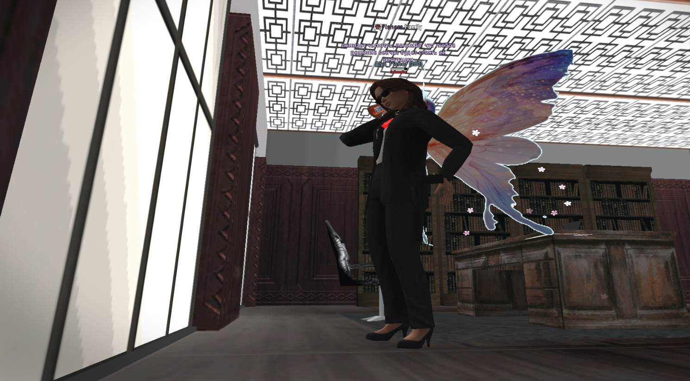
Звонок: точка определена. Министр берёт журналиста с собой.
В чёрном лимузине тихо. Alya читает заголовки на телефоне — город уже знает о перехвате. Лицо каменеет с каждой строчкой.
Надеюсь, мы успели — говорит она тихо, не поднимая глаз от экрана.
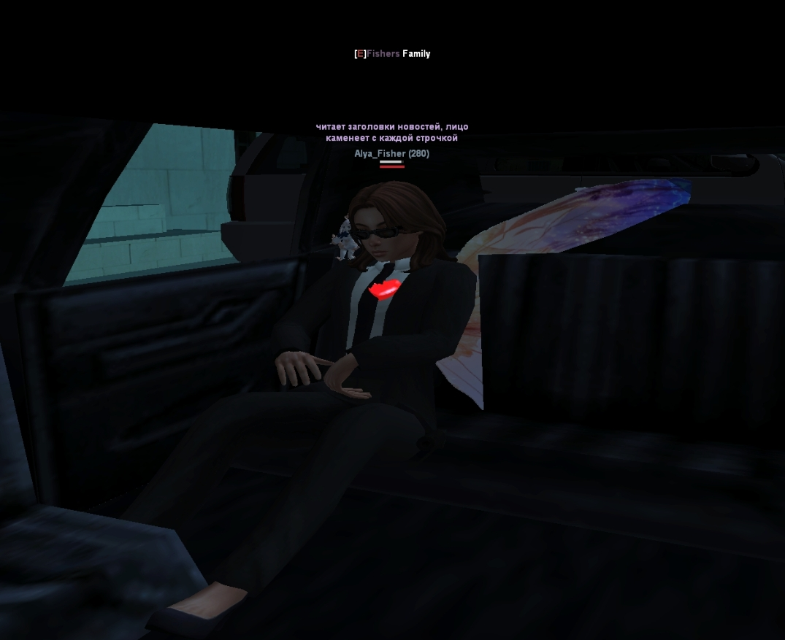
Кирпичные стены, металлический стол, лампа над столом.
Задержанный уже здесь. Журналисту разрешили присутствовать. Министр хочет понять одно: зачем — и кто за этим стоит.
Это война, которая идёт каждую секунду
— министр Alya Fisher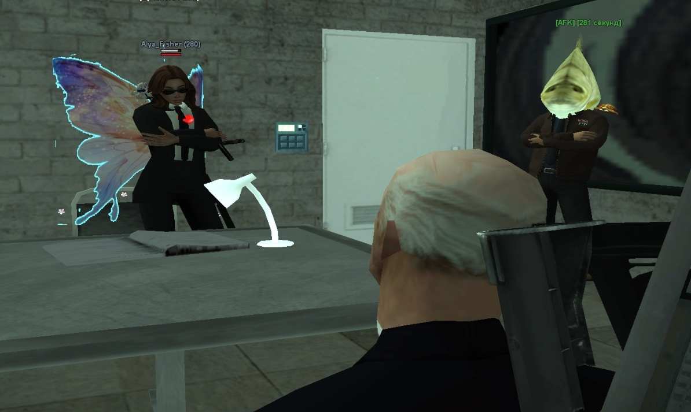
Она поправляет пиджак, садится за стол и протягивает папку.
Это ваш эксклюзив. Используйте его с умом — два часа назад это было скучное интервью. Теперь — материал о человеке, который в одиночку остановил атаку на информационную систему штата.
Это ваш эксклюзив, используйте его с умом
— министр Alya Fisher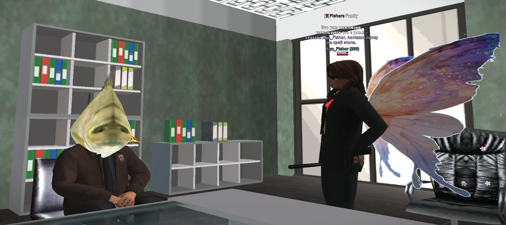
Министр Alya Fisher собрала редакторов Los-Santos News и разыграла среди них миллион.
Министр информационной связи Alya Fisher пригласила редакцию Los-Santos News на закрытую встречу. Никто не ожидал, что это будет не пресс-конференция, а настоящая викторина.
В конференц-зале собрались все ключевые фигуры редакции: Puro Sao, Leyla Mado, Akkiemi Amy и приглашённые гости. На столе — папки с вопросами, конверты с призами и та самая красная папка, которую министр передавала журналисту всего несколько часов назад.
Вы доказали, что умеете работать с информацией — сказала Fisher, открывая встречу. — Теперь посмотрим, умеете ли вы её использовать.
Первый вопрос — о взломе частот. Второй — о маршруте лимузина. Третий — о том, что было написано в письме, найденном в переулке San Fierro. Редакторы отвечали по очереди, спорили, смеялись. Министр вела игру с той же спокойной уверенностью, с которой вела допрос хакера.
В конце вечера победитель получил конверт с миллионом. Но главное — не деньги. Главное, что после этого вечера редакция Los-Santos News стала чем-то большим, чем просто коллектив журналистов.
Информация — это валюта. Но иногда она превращается в дружбу
— министр Alya Fisher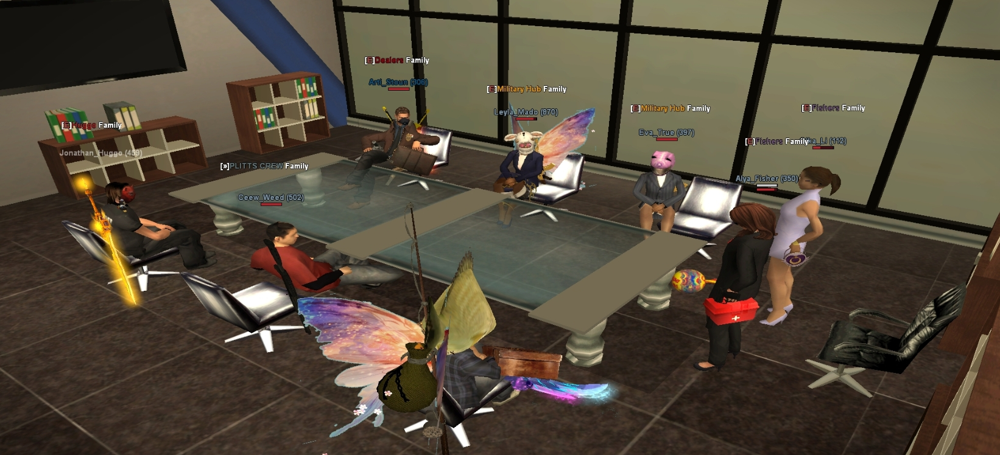
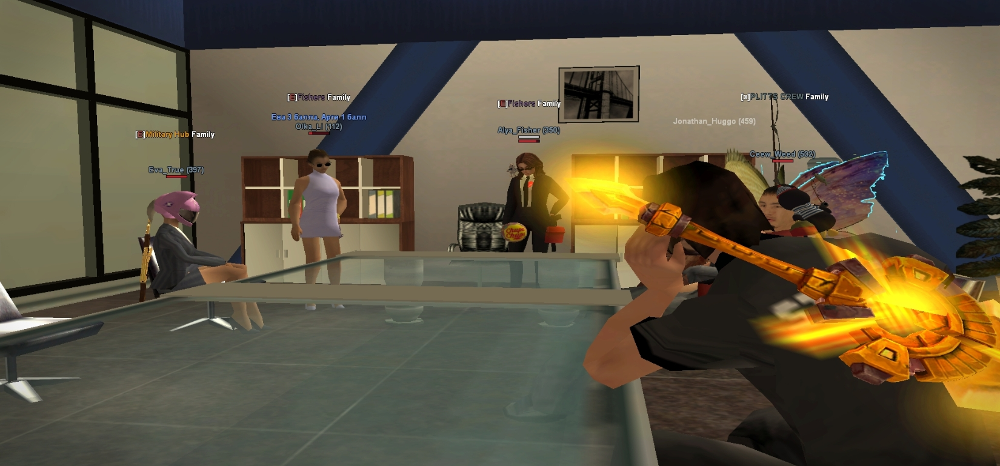
Шериф Felix Akana (San Fierro PD) возвращается к воспоминанию, которое мучает его три года.
Участок San Fierro пуст после десяти. Свет горит только в кабинете шерифа.
Felix Akana сидит за массивным столом. Перед ним — монитор и старая папка с пожелтевшими краями. На табличке: CHIEF. Он смотрит на экран, но не видит его.
Я пытался забыть это — бормочет он. Забыть не вышло: пропавший человек, след, оборвавшийся на мосту, и три года тишины.
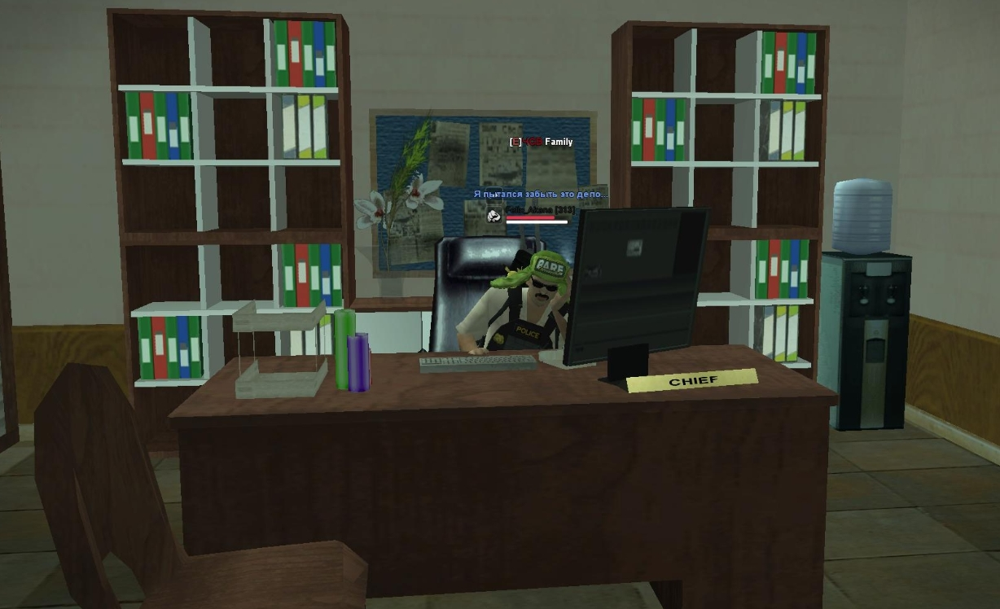
Он не выдерживает: встает, берет куртку и выходит в ночь.
Эта безумная ночь — говорит Akana у патрульной машины. Фары режут темноту. Он едет без цели, лишь бы не сидеть на месте, лишь бы не думать.
Никаких сигарет не хватит, чтобы снять стресс — руки дрожат не от холода. Он знает: сегодня что-то изменится.
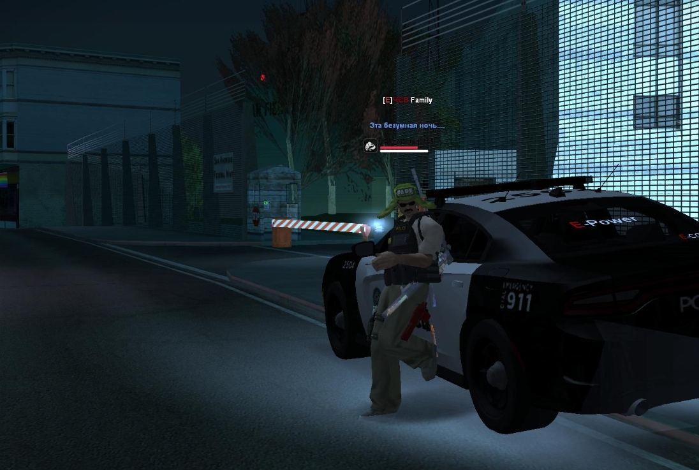
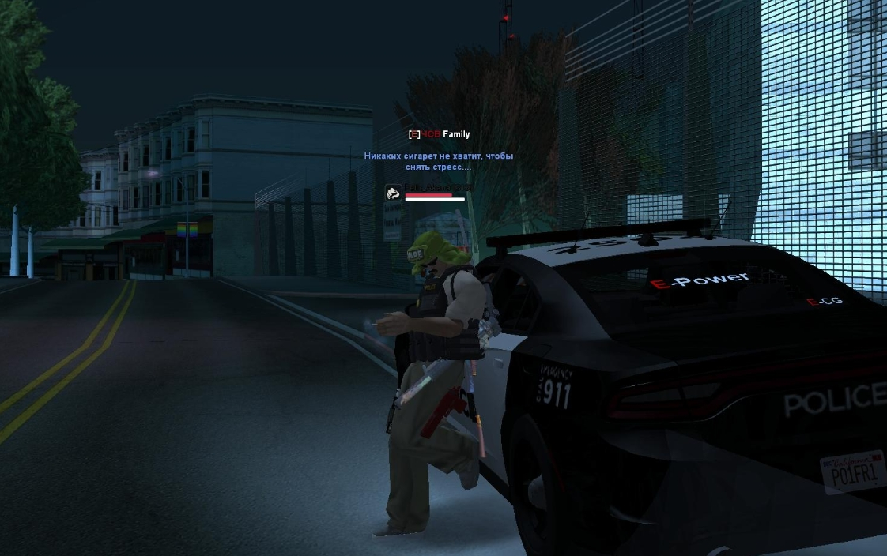
Фонарик выхватывает старые коробки у стены — и пальцы натыкаются на твердое.
Конверт. Потерпанный, с его именем, написанным от руки — тем самым почерком, который он узнает из тысячи.
Неужели... Как я мог это упустить — голос срывается. Кто-то оставил это здесь. Для него.
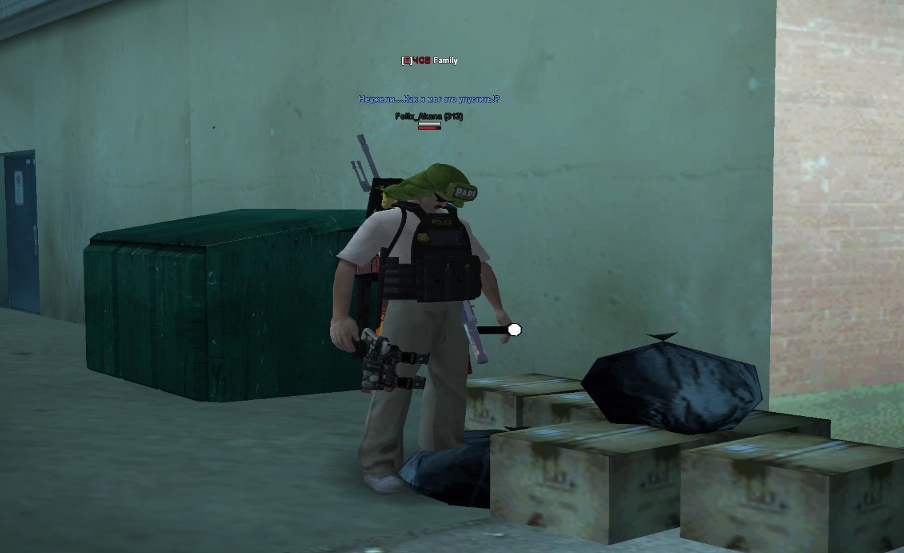
Я давно слежу за тобой.
Приходи на мост ночью.
Приходи один.
Он идёт к мосту. Медленно. С письмом в руке.
Фонарь освещает дорогу, но не мысли. С каждым шагом — воспоминания: смех брата за рулём, последний разговор, обещание встретиться. Кажется, я вспомнил кое о чём — говорит Akana вслух.
Мост вырастает из темноты. На другом конце — фигура. Amrudin Huse. Тот, кого он искал три года. Тот, кого он когда-то называл братом.
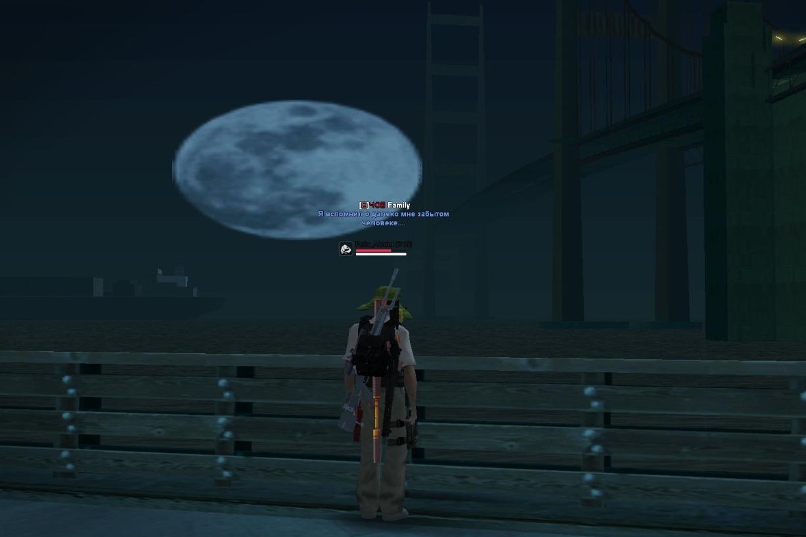
Все происходит за секунду: хлопок, вспышка — и машина вспыхивает.
Akana стоял спиной и не двигался. Пламя пожирало металл, стекло — все, что могло дать ответы и вернуть брата. Брат... — в этом шепоте три года боли и надежды, что однажды он найдет его живым.
Этот кадр не выходит из головы. Каждую ночь. Каждый раз у моста.
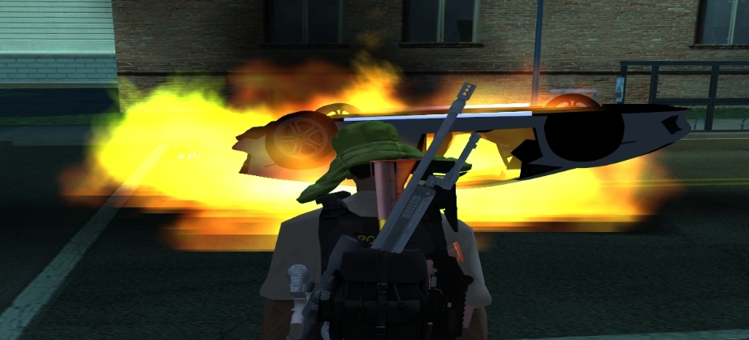
Они встретились на мосту. Три года молчания — и одно слово.
Не делай этого! — кричит Феликс. Но брат уже делает шаг назад. Ещё один. И перила принимают его.
Вода внизу чёрная и тихая. На перилах остаётся только след от руки — тёплый, живой, ещё не остывший. И тишина, которая громче любого выстрела.
Некоторые ответы приходят слишком поздно. Некоторые двери закрываются навсегда
— из рапорта шерифа Felix Akana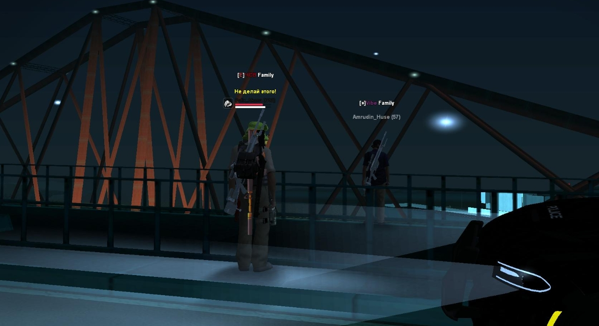
Он потерял брата дважды — сначала в пламени три года назад, а теперь снова, на своих глазах, когда перила приняли его. Мост San Fierro молчит. В кабинете горит свет. Кто-то будет читать этот протокол до утра.
— Конец дела · Los-Santos NewsLos-Santos News ищет активных и целеустремлённых людей.
Метеосводка на 16–22 ноября 2026 по всему штату San Andreas.
Гороскоп на 16–22 ноября 2026 — от астролога редакции Akkiemi Amy.
Неделя толкает к смелым решениям. Действуйте, пока Марс на вашей стороне.
Решительность — ваш ключ.Финансовая стабильность укрепится. Терпение — ваш союзник.
Не торопите события.Разговоры открывают двери. Доверяйте интуиции, но проверяйте факты.
Слово — ваше оружие.Семья — источник силы. Позаботьтесь о себе так же, как о близких.
Дом — ваша крепость.Ваши идеи заметят на этой неделе. Верьте в свой талант.
Сцена ждет вас.Внимание к деталям принесет результат. Доводите планы до конца.
Точность — ваша сила.Отношения выходят на новый уровень. Будьте честны в разговорах.
Баланс — ваш путь.Интуиция подскажет решение. Используйте скрытые знания.
Тайны раскроются.Новые горизонты принесут идеи. Удача любит смелых.
Двигайтесь вперед.Упорный труд будет вознагражден. Дисциплина — мост к мечте.
Терпение окупится.Нестандартные решения принесут успех. Ваша уникальность — сила.
Будьте собой.Творческая энергия поможет воплотить задуманное. Прислушайтесь к себе.
Мечтайте вслух.Работа в СМИ — это не просто профессия. Это образ жизни, в котором каждый день начинается с вопроса: «Что сегодня важно?» И каждый день заканчивается ответом, который ты сам помог найти читателю.
Эта неделя стала для редакции Los-Santos News одной из самых насыщенных за последнее время. Мы провели сутки с шерифом Cowell — и увидели, какой ценой даётся порядок на улицах. Мы были рядом с министром Fisher в момент взлома частот — и поняли, что за каждым заголовком стоит человек, который принимает решения за секунды.
Мы сидели в конференц-зале, когда министр разыгрывала миллион — и поняли, что наша команда способна не только писать новости, но и становиться их частью. Мы шли за шерифом Akana к мосту San Fierro — и почувствовали, что такое настоящее расследование, где за каждой строкой стоит чья-то жизнь.
Я горжусь каждым из вас. Puro Sao, который не спал ночами, сводя материал воедино. Leyla Mado, чьи фотографии говорят громче любых слов. Akkiemi Amy, чьи прогнозы и гороскопы стали для читателей маленьким островком стабильности в мире, который меняется каждый день.
Работа в СМИ — это когда ты не просто рассказываешь историю. Ты становишься её частью. И эта неделя — лучшее тому доказательство.
Спасибо, что вы с нами. Спасибо, что читаете нас. Спасибо, что делаете Los-Santos News тем, чем он является сегодня — голосом города, которому доверяют.
Люди, которые сделали эту полосу возможной.